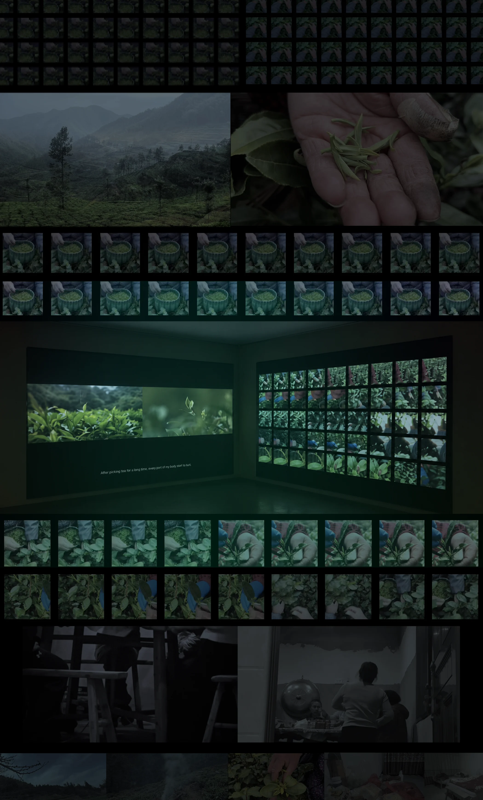
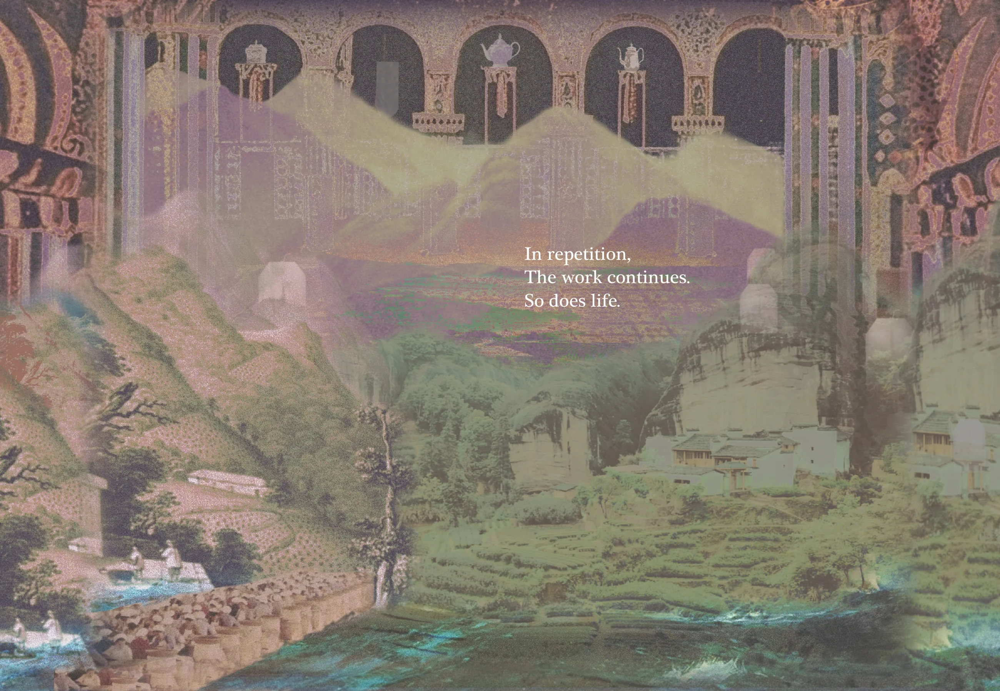

采茶工作真实的一天
左侧以观察式纪录片呈现采茶工作真实的一天，将劳动现场与采茶工自己的讲述连接起来。较长的观察镜头、短暂黑屏与沉默形成呼吸空间；采茶、等待、休息、交谈与重返劳动共同构成时间线。茶园同时也是她们交流、相互支持与共享时间的临时社会空间。
Tea-Picking Women and the Rhythm of
Year-Round Short-Term Labour
季节性劳动中女性采茶工的自我价值与韧性
个人项目
研究与访谈、远程拍摄指导、剪辑、英文字幕、声音编排
7分钟；双通道影像、双通道声音；循环播放；中文对白、英文字幕
Living in Repetition 是一件聚焦中国中老年女性采茶工的双通道纪录影像装置。一侧投影跟随一位采茶工的日常工作，将访谈音频与现场环境声结合；另一侧聚焦重复的采茶手势，通过动作追踪与画面叠加，将挑选和采摘茶叶的动作可视化。其声景将田野录音重新组织为富有节奏、近乎机械的声音作品。项目以平视而非怜悯的视角呈现这些处于边缘位置的女性，通过日常细节、沉默、身体、空间与选择，表达她们坚韧的生命力。
作品以双屏并置、重复、持续时间与声音呈现女性采茶工的劳动经验：左屏跟随真实工作日中的劳动、交谈与休息，右屏聚焦反复的采摘手势与身体细节。观众可以自行决定将目光投向何处，在两路影像之间切换，感受时间、身体付出与被分散的注意力。无法同时捕捉全部信息，也是观看经验的一部分，回应了这些女性的生活难以被单一画面或访谈完整概括的现实。
《生活于重复之中》的“重复”存在于多个层面：重复的手部动作、工作日与季节，以及不同短期劳动之间不断发生的转换。重复带来疲惫，也形成身体知识、节奏、记忆与继续生活的方式。困难的劳动条件是真实的，却并非这些女性的全部身份；作品同时呈现劳动如何形成技能、自我价值、友谊，以及继续生活的力量。
这里的“韧性”并不意味着默默接受不公平的条件，而是人在有限条件中，仍然能够持续创造意义、关系与价值的能力。双屏让劳动的艰辛与日常生活中的情感、判断和相互支持并置，使观众在理解处境的同时，看见她们作为完整个体的经验与力量。
FINAL FILM
双通道完整作品 · 7分6秒
以下A4资料页呈现部分研究与制作过程；项目的主要成果是同步呈现两路影像的双通道作品。
项目始于一则关于女性采茶工的网络报道。报道着重呈现季节性劳动的艰辛，却较少涉及劳动对她们自身的意义，以及采茶季之外的生活。通过与有采茶经历的亲属及其他女性采茶工访谈，我将关注点从劳动的艰辛转向自我价值：如何呈现重复劳动中的身体节奏、技能与强度？她们如何表达自主性和韧性？如何承认生活的不稳定，又不将她们固定为受害者或浪漫化苦难？
RESEARCH ARCHIVE
季节性劳动、身体经验与访谈资料
研究通过访谈、理论阅读、合作拍摄与剪辑反思展开。由于无法在整个采茶季驻留现场，浙江的核心素材由父亲在我的远程指导下拍摄，重点记录手部动作、身体姿态、现场声音、休息及劳动者之间的关系。早期两周测试邀请参与者用手机记录日常工作；因当时并非采茶季，素材也包含其他短期工作，用来观察重复劳动如何贯穿全年生活。
左侧以观察式纪录片呈现采茶工作真实的一天，将劳动现场与采茶工自己的讲述连接起来。较长的观察镜头、短暂黑屏与沉默形成呼吸空间；采茶、等待、休息、交谈与重返劳动共同构成时间线。茶园同时也是她们交流、相互支持与共享时间的临时社会空间。
右侧集中呈现寻找嫩芽、判断成熟度、控制指尖力度、采摘及放入茶篓的动作。通过动作追踪、重复与叠加，把依赖触觉、速度、精度和长期经验的身体知识转化为视觉结构。后半段画面与声音逐步增强，使观众感受宽景镜头难以传达的劳动密度、身体节奏与时间。

聆听，日常的回响。
声音以田野录音为基础，包括采摘茶叶的声音、茶叶落入茶篓、脚步、衣物摩擦、风、交谈与呼吸。通过剪辑、叠加、节奏组织及中国乐器元素的编排，将日常劳动声音转化为关于时间、节奏与身体付出的体验；经许可保留采茶工的民歌演唱，呈现劳动中的情感。
呼吸、摩擦与重复的采摘声，让观众在观看劳动的同时，感受到身体的压力、距离与疲惫。声音设计保留女性真实劳动环境的质感，从劳动声音本身的节奏、张力与情感出发，避免用戏剧化音乐预设观众的情绪。沉默与停顿也构成声景的一部分，让下一次重复的声音更有重量，并为观众留出观察与感受的时间。
Yosi Horikawa 的 Wandering 是空间层次与节奏运动的参考，并非作品中的采样素材。

作品以两幅并置投影、双通道声音和循环播放构成，中文对白配英文字幕。观众在左侧的社会关系与右侧的身体动作之间转移注意力。创作保留疲惫，也保留交谈、休息、歌唱与相互支持，以平视的方式承认她们的判断、情感与选择。研究参考包括 Nomadland、谢德庆的 Time Clock Piece 与 D-Fuse / Mike Faulkner 的 Nine Earths。
NEXT PROJECT